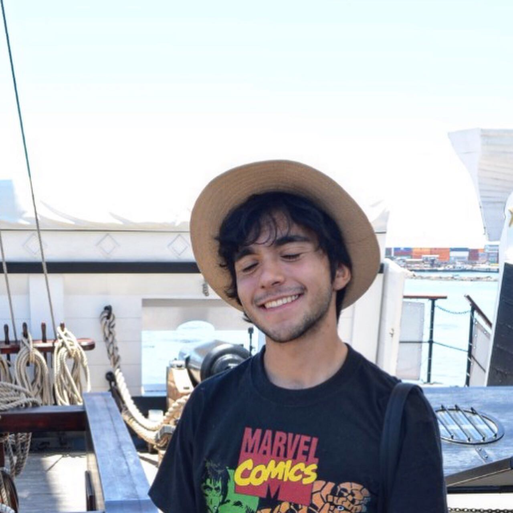

FAEL RINCÓN GEEK DE
FABIAN.
Fabian Camilo Andrade
Videojuegos, historias y nostalgia
Reseñas, análisis y reflexiones sobre los juegos que nos marcaron.
PARA EMPEZAR
VIDEO DESTACADO
Los recuerdos que definen nuestro destino
Mi reflexión sobre Final Fantasy VII y las historias que permanecen con nosotros.
Ver mis videosTAMBIÉN TE PUEDE GUSTAR
MIS ENLACES
MI LADO DEV
También construyo experiencias más allá de los videojuegos.